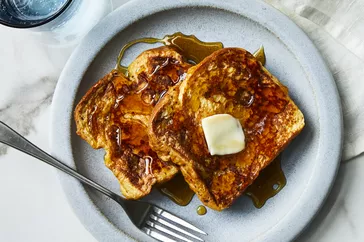

Recipe for French toast

Description
This fabulous French toast recipe works with many types of bread — white, whole wheat, brioche, cinnamon-raisin, Italian, or French! Delicious served hot with butter and maple syrup.
Make our most popular French toast today to find out what all the fuss is about!
Ingredients
You will need these ingredients for the world's best French toast.
- White bread:You will need thick cut bread for the French toast.
- Eggs:You will need one or two eggs.
- Milk:Use full-cream milk.
Steps
Follow these steps to make the French toast.
- Whisk ingredients in a shallow bowl.
- Dunk bread in the mixture, soaking both sides.
- Cook until golden.